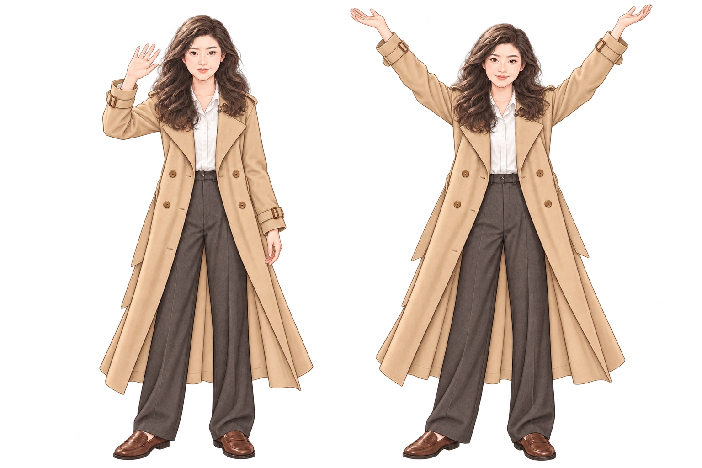
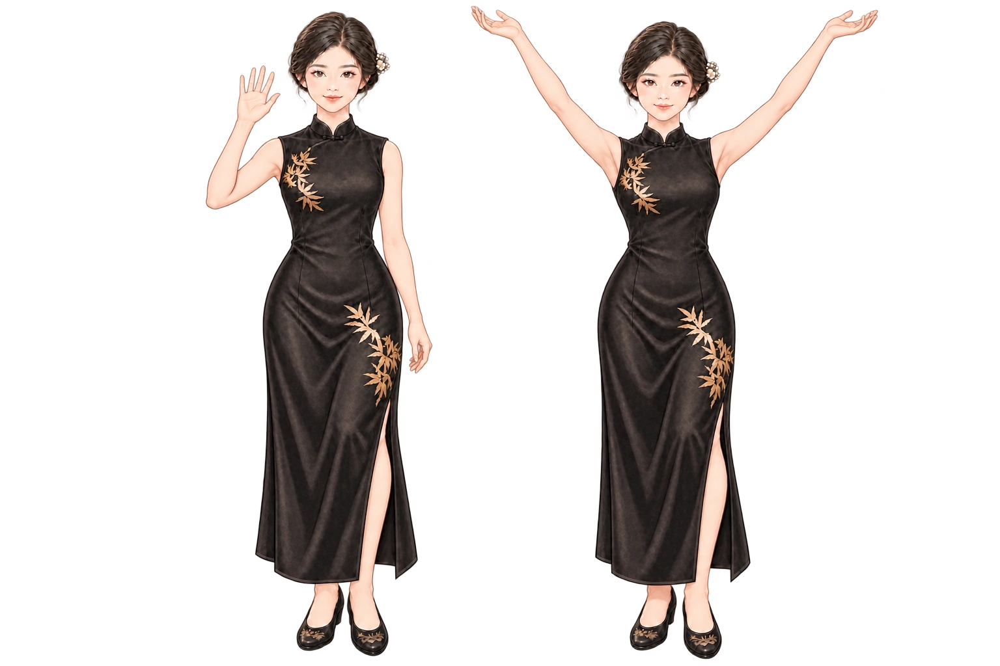
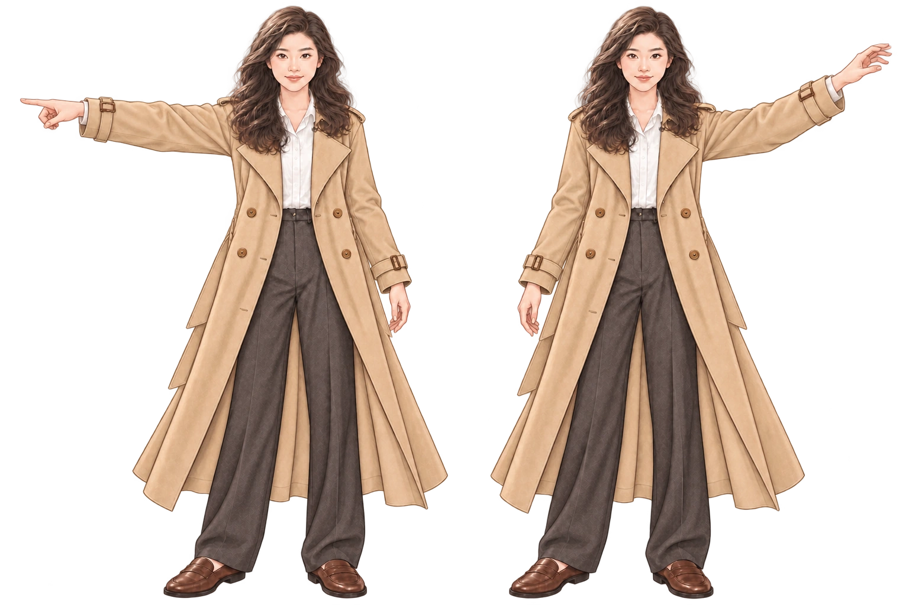
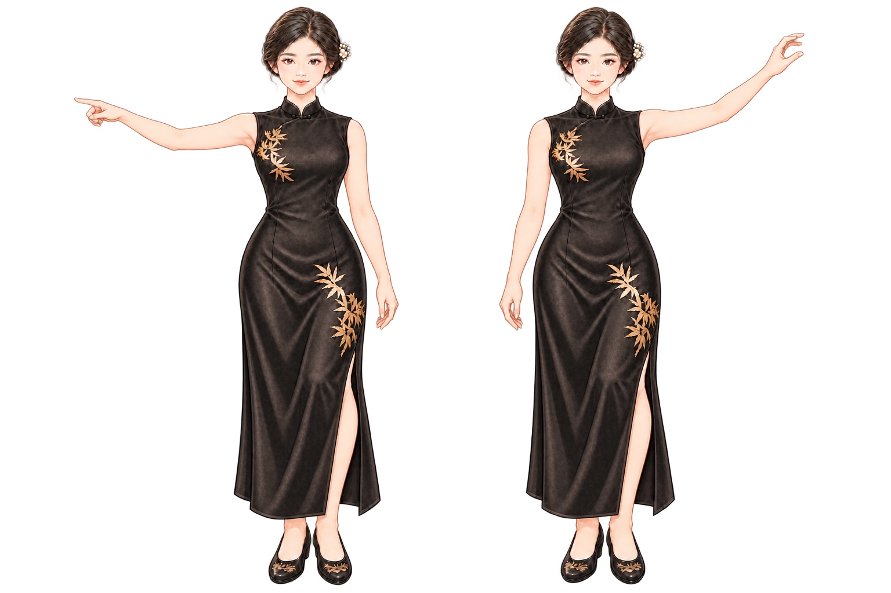
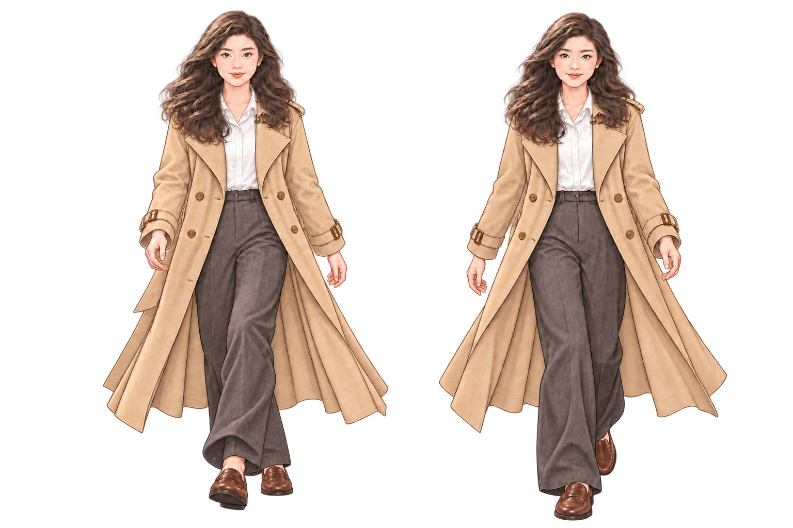
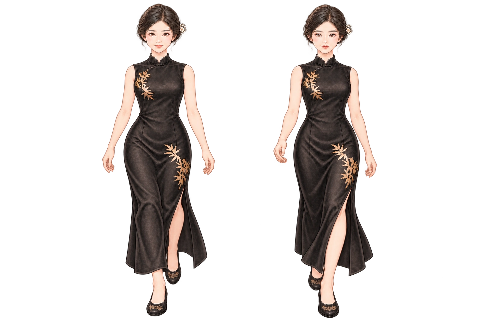

Painted clothes and fur, carved timber, folded paper, an open-front home and botanical screens. The world keeps its places, conversations and little surprises.
These paintings are references for the shape of the shoulders, sleeves, elbows and hands. The live poses below use the same character proportions.






Open any screenshot to see it at full size. Try the live world for walking, grooming, cooking, reading and the pond's swimming koi.